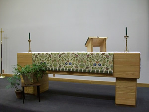

Worship times
Sunday 10:30 AM
Office hours
10:00 AM - 2:00 PM M-F
Pastor
Monday - Wednesday:
9:00 AM - Noon
Thursday: 10:00 AM - 1:00 PM
and by appointment
Friday: day off
907-747-3338

Sitka Lutheran Church
PO Box 598
224 Lincoln St
Sitka, AK 99835

WORSHIP - What to expect
When you visit Sitka Lutheran for Sunday worship, here are some things to expect:
We have one worship services every Sunday morning. Our 10:30 a.m. worship is about one hour long and consists of prayers, readings, and a variety of music. Our basic pattern of worship is one common among many Christian churches:
- We come together.
- We hear God’s Word.
- We share the Lord’s Supper.
- And we are sent into the world to proclaim the gospel and serve in the name of Christ.
COMMUNION?
We have Holy Communion every Sunday. Jesus Christ is the host at the communion table. All are welcome at the Lord’s Table regardless of church affiliation. The pastor and assistants distribute bread (gluten-free is available), and wine or grape juice to everyone at the table. If you do not wish to receive these, please know that you may also come forward during this time and receive a blessing.
CHILDREN?
Children are welcome at all our worship services and a children’s talk is always at hand. During worship, if they need a break, you can see and hear everything from the Family room at the back of the worship space. We have Sunday School for those aged 3 through adults at 9:15am, September through May. During the summer months we encourage families to worship together.
OFFERING?
We are a congregation who believe sharing our God-given gifts and resources is a worshipful part of our discipleship. We do take an offering at every service to allow members and friends to contribute their tithes and offerings. Do not feel you have to make an offering on your first visit. If you do, thank you for your generosity.
WHAT SHOULD I WEAR?
On any given Sunday morning you will find us dressed in casual attire or in suits, Cahaarts and extra-tufs or rain gear abounding since we live in a temperate rain forest, blue jeans, t-shirts (clean). Do not let your clothing keep you away from the celebration.
WORSHIP - What we believe
WE SEEK TO PROCLAIM AND LIVE OUT the good news of God's love in Jesus Christ for all people. As Lutheran Christians, we stand on four basic principles:
- GRACE ALONE
God's love is unearned and unconditional. This love is called "grace." - FAITH ALONE
Through God's gift of faith we say "yes" to God's gift of grace. - CHRIST ALONE
God's ultimate act of selfless love comes through the death and resurrection of Jesus Christ. - SCRIPTURE ALONE
Through the scriptures we discover God's love and life. We seek to understand the modern world in dialog with these authoritative words of faith.
WE RESPOND TO WHAT GOD HAS DONE THROUGH
- Worship
- Fellowship
- Caring
- Service
Ecumenical Partners
Locally, Sitka Lutheran Church is a member in the Sitka Christian Ministerial Association which consists of about 12 different denominations. Jointly, we create and participate in the annual Blessing of the Fleet and a community Easter Sunrise Service.
Internationally, Lutherans are part of a reforming movement within the whole Christian church; as a part of practicing their faith, the Evangelical Lutheran Church in America has, and continues to, engage in ecumenical dialogue with other church bodies. The ELCA has entered into cooperative "full communion" agreements with several other Protestant denominations, including
- The Episcopal Church
- The Moravian Church
- The Presbyterian Church (USA)
- The Reformed Church in America
- The United Church of Christ
- The United Methodist Church
WORSHIP - Wednesdays
Traditionally Wednesdays have been a day for church activities. Here at Sitka Lutheran the tradition continues. Everyone is invited to participate in these relaxed and meaningful experiences.
Pioneer Home worship: 10:30 AM
In the morning we lead a short Protestant worship service at the Pioneer Home. This ministry is shared with St. Peter’s by-the-Sea Episcopal Church and Sitka United Methodist Church.
The Pioneer home provides an assisted living environment for elders of our community. The photo is from the Alaska Department of Health and Social Services website.
Soup & Study: 6:00 PM
We share a simple meal of soup and bread and then take up a short study of the Biblical text for the coming Sunday. Occasionally we hold a casual Vespers worship with Holy Communion.
Advent and Lent: 6:00 PM
We honor these church seasons which proceed Christmas and Easter. Our Wednesday evening gatherings include special worships and/or studies.
WORSHIP - Weddings
We are delighted you might consider being wed at Sitka Lutheran Church. The information on this page is presented as an aid for you to make a host of decisions leading up to your wedding day as well as inform you as to what is expected with a wedding within the church setting. Christian marriage is more than two people in love publicly declaring their intention to join together in marriage. As representatives of the church and Christ we believe that God institutes marriage. We strive to make each wedding comfortable, special, and holy.
THINGS TO KNOW
- The wedding is for the couple and will be done, in good taste and decorum, as the couple wishes and as the pastor approves.
- The pastor will meet with the bride and groom a minimum of three times for premarital counseling sessions. These premarital get-togethers are a) for the pastor to get to know you; b) for you as a couple to get to know each other; c) ) to lay a good foundation for a Christian marriage; d) to work out the details of the service. If there are special problems, other meetings can be arranged. It is understood that what is said in the counseling sessions by both the couple and the pastor is confidential.
- Christ will be mentioned during the counseling sessions and during the wedding.
- The wedding is not a performance, but a gathering of participants who come to pray, worship, and look for God's blessings. It is God who has brought two people together through the gift of love. It is God who will bind two people together in the oneness of marriage. We ask that you as a couple share the spirit of joy, blessings, and concern so that the service will be meaningful and give glory to God.
- The weddings of Sitka Lutheran Church members and their families will be given precedence over those of non-members.
- Church facilities can be made available for a reception after the wedding pending other scheduled events.
- Fees for non-members may apply. For complete information on planning a wedding please contact Sitka Lutheran at 907-747-3338.
For complete information on planning a wedding please contact Sitka Lutheran at 907-747-3338
WORSHIP - Funerals
Funerals are services of worship, remembering the deceased, celebrating God's grace and preparing family and friends to grieve properly in the light of Christian hope. Because funerals are an important part of the healing ministry of the church, the following guidelines are offered so that families may have some direction in the midst of difficult and often confusing circumstances.
THINGS TO KNOW
- If death is imminent, then please the Pastor so that she or he may be there to offer final prayers and farewell and Godspeed to the loved one.
- The death of a member of Sitka Lutheran is to be reported to the Pastor as soon as possible. The Pastor will visit with the family and begin with them the preparations for the funeral, memorial, or celebration of life.
- Funerals can be arranged for those people are loosely associated with Sitka Lutheran or have no other church affiliation.
- The funeral may be held at the church with a graveside service to follow or the entire funeral may take place at the grave site, whichever the family prefers.
- In preparation for the funeral the family may suggest favorite Bible passages, hymns, poems, and/or stories that might be used in the service.
- Church facilities can be made available for a reception after the funeral pending other scheduled events.
- Fees for non-members may apply. Please contact the church office for complete information: 907-747-3338.
Please contact the church office for complete information: 907-747-3338